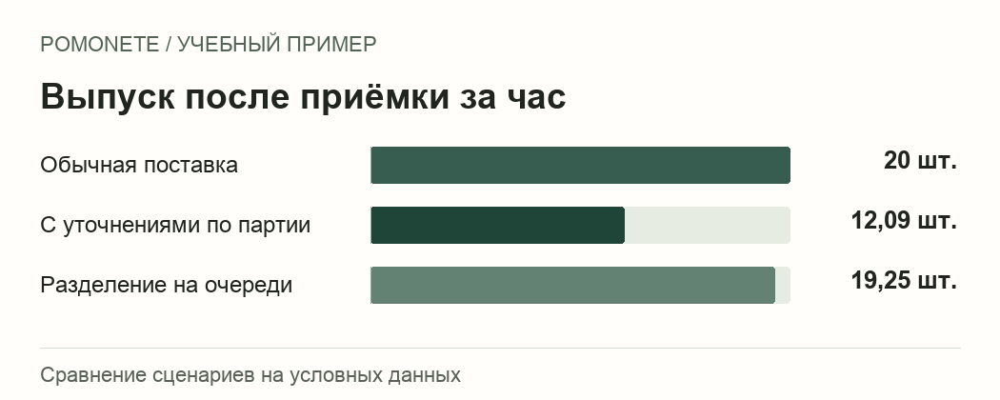

От приёмки до доступности товара на Яндекс Маркете
Как селлер оценивает скорость выпуска единиц после разделения приёмки, проверки и выкладки.
Поставщик замков сообщил, что товар уже поступил. Селлер Яндекс Маркета всё равно не может рассчитывать выпуск заказов в полный объём: остаток проходит несколько этапов. Сравним скорость выпуска и отметим, какую работу надо изменить, чтобы доступность действительно ускорилась.
Как выделить стадии
Укажите поступление, начало приёмки, конец проверки и доступность в своём учёте. Для площадочного склада используйте наблюдаемые статусы, которые можете подтвердить. Для собственного склада записывайте получившиеся штуки отдельно от единиц, которые лишь числятся в приходе.
Чтобы пересобрать расчёт «Выпуск после приёмки за час» для своего магазина, перенесите в него исходные числа. В формуле A обозначает «фактически доступные единицы», B обозначает «часы после прихода». Результат относится к единице, указанной в знаменателе. Общую сумму за несколько групп восстанавливают из исходных объёмов. Запишите рядом период и охват каждого среза. Если для одной строки известна только оценка, оставьте пояснение непосредственно рядом с ней: по итоговой цифре источник уже не восстановить.
Выпуск после приёмки за час = A ÷ B
| Условие | Фактически доступные единицы | Часы после прихода | Выпуск после приёмки за час |
|---|---|---|---|
| Обычная поставка | 180 | 9 | 20 шт. |
| С уточнениями по партии | 133 | 11 | 12,09 шт. |
| Разделение на очереди | 154 | 8 | 19,25 шт. |

В сценарии «Обычная поставка» в формулу подставляем фактически доступные единицы = 180, часы после прихода = 9. Получается 20 шт.. В поставке знакомые модели, а последовательность этапов стабильна.
В сценарии «С уточнениями по партии» в формулу подставляем фактически доступные единицы = 133, часы после прихода = 11. Получается 12,09 шт.. До части единиц дольше доходят подтверждения. В числителе только доступные.
В сценарии «Разделение на очереди» в формулу подставляем фактически доступные единицы = 154, часы после прихода = 8. Получается 19,25 шт.. Проверенные ходовые позиции переходят в работу отдельным потоком.
Если «Обычная поставка» взять за исходную точку, «С уточнениями по партии» меняет показатель «выпуск после приёмки за час» на -7,91 шт., а «Разделение на очереди» на -0,75 шт.. Между двумя последними строками разница составляет 7,16 шт. при вычитании второй из третьей. Смотрите, какой именно вход изменился между строками. Если менялись объём и условия одновременно, итог сравнения относится ко всему сочетанию.
От меньшего результата до большего в таблице 7,91 шт.. При переходе из «С уточнениями по партии» со значением 12,09 шт. в «Разделение на очереди» со значением 19,25 шт. условия заданы явно. Этот интервал описывает три построенных случая, а для вероятности исходов нужна история. В рабочей записке полезно назвать минимальное значение, при котором сохранится ваше решение. Если такой порог попадает внутрь интервала, подтвердите спорный параметр до того, как менять процесс.
Что делает выпуск неоднородным
Простые позиции могут сразу пройти по известной схеме, а для новых нужна подтверждённая комплектация. Если их смешать, средний выпуск не показывает, какой объём будет доступен к ближайшей отгрузке. Для каждого вида сделайте отдельный ориентир времени.
Для исходной выборки пригодится такой набор материалов: журнал склада и временные отметки заказов. Зафиксируйте строки и границы периода, по которым собирался показатель «выпуск после приёмки за час». Копию выгрузки держите рядом с рабочим расчётом. По ней коллега сможет проверить, что строку отнесли к нужному сценарию, а единица измерения сохранилась при переносе.
Для сравнения выведите короткий журнал с временем поступления работы, началом обработки и моментом передачи. Длительность операции измеряют на нескольких сменах, чтобы короткая спокойная неделя не стала единственной нормой. Товары разных размеров и сложность сборки записывают отдельными группами. На узком участке неравномерность важна так же, как общая загрузка: два одинаковых дневных итога могут оставить разный хвост необработанных заказов.
Что сильнее всего меняет результат
Здесь проверим устойчивость числа 12,09 шт., полученного для «С уточнениями по партии». Настраиваемые входы: «фактически доступные единицы», «часы после прихода». Меняем по одному параметру с шагом около 10% от его значения. Для небольших исходных чисел разница округляется до доступной целой единицы. Сдвиги ниже относятся к исходному сценарию, поэтому читатель может сопоставить их в одних единицах.
- «Фактически доступные единицы» меняется с 133 на 146. При прежних остальных входах получается 13,27 шт., сдвиг составляет 1,18 шт..
- «Часы после прихода» меняется с 11 на 12. При прежних остальных входах получается 11,08 шт., сдвиг составляет -1,01 шт..
Наибольшее отклонение в примере связано с параметром «фактически доступные единицы» и составляет 1,18 шт.. Сохраните в расчёте, почему выбран именно этот сдвиг. После следующей выгрузки вместо учебных шагов попробуйте подставить разницу между наблюдавшимися периодами. Так проверите, насколько устойчива цифра при фактических колебаниях вашего магазина.
Добавьте в рабочий расчёт ближайшую связку с заказами. Разделение на группы полезно тогда, когда ранний выпуск влияет на исполнение или доступные продажи. Если спрос слабый, более ранние штуки освобождают мало денег, и команде может подойти прежняя схема.
Как проверить перестановку очереди
Выберите ходовые позиции, которые допустимо обработать отдельной группой. Следите за временем поступления и долей завершённой проверки. После пилота посмотрите скорость и оставшуюся очередь, чтобы убедиться, что доступность ускорилась без системного отставания остальных.
Полезно раз в несколько смен собрать пакет отклонений и приложить отметки о причинах. У одного опоздания бывает несколько объяснений, и назначать его первому видимому участку рискованно. Если временный ресурс перемещали между зонами, включите в расчёт, где исчезли эти часы. После пилота проверьте верхний хвост длительности и число заказов, которые перешли за срок.
Оставьте в рабочей таблице причину выбора. Когда селлеры Яндекс Маркета возвращаются к расчёту «выпуск после приёмки за час», им пригодятся полученное значение, ответственный и дата пересмотра. Если в решении использовался сценарий «С уточнениями по партии», перенесите вместе с ним допущения. При обновлении источников сначала проверьте одну исходную строку и только потом пересчитывайте сводку.